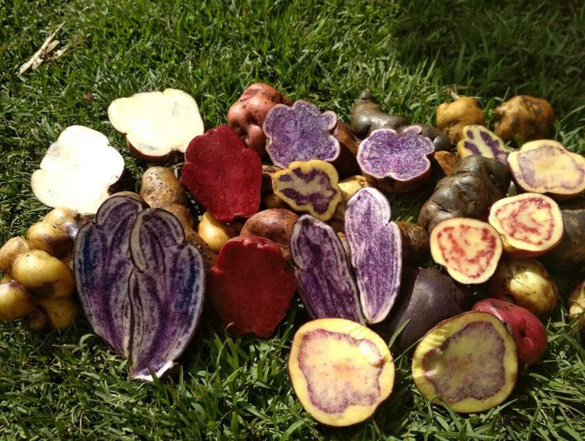
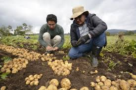
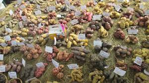

Origen
Bien para hablar de la Papa , empezemos por su origen
Las primeras papas cultivadas probablemente fueron seleccionadas
entre 6.000 y 10.000 años atrás, al norte del lago Titicaca, en los Andes del sur de Perú.
Allí, a partir de las especies silvestres Solanum bukasovii, S.
Más tarde, esta domesticación resultó gradualmente en una mayor producción de alimentos que a
su vez estimuló el crecimiento y desarrollo de las civilizaciones andinas. Sociedades más complejas
de los Andes como Tiahuanaco en Bolivia (500 d. C.-1000 d. C.), Chavin (1200 a. C. - 400 a. C.), Nazca(100 a.
C. - 800 d. C.), Moche (0-600 d. C.), Chimú (900 d. C.-1470 d. C.) en Perú, consolidaron su consumo en la región.7 El
cultivo de las diferentes clases de papa estaba tan altamente desarrollado, que los distintos tipos y sus propiedades
diferían mucho de los de la planta original evolucionada naturalmente.
Cultivo

Actualmente en el Perú, es el principal cultivo del país en superficie sembrada y representa el 25% del PBI agropecuario.
Es la base de la alimentación de la zona andina y es producido por 600 mil pequeñas unidades agrarias. La papa es un cultivo
competitivo del trigo y arroz en la dieta alimentaría. es un producto que contiene en 100 gramos; 78 gr. de humedad;
18,5 gr. de almidón y es rico en Potasio (560mg) y vitamina C (20 mg).
El Perú es el país con mayor diversidad de papas en el mundo, al contar con 8 especies nativas domesticadas y 2,301 de las más de
4,000 variedades que existen en Latinoamérica. Además, nuestro país posee 91 de las 200 especies que crecen en forma silvestre en
casi todo nuestro continente.El Centro Internacional de la Papa (CIP) es la institución encargada de la conservación científica de
la papa, y al mismo tiempo lo hace con otros tubérculos y algunas raíces. Su labor se inició en 1,971 y tiene como objetivos reducir
la pobreza, aumentar la sostenibilidad ambiental y ayudar a garantizar la seguridad alimentaria en las zonas más pobres y marginadas.
Es un tubérculo de consumo popular, adaptado a diferentes condiciones climáticas y de suelos de nuestro territorio. Sin embargo, los
mejores rendimientos se logran en suelos franco arenosos, profundos, bien drenados y con un Ph de 5,5 a 8,0.
El cultivo de la papa se ve favorecido por la presencia de temperaturas mínimas ligeramente por debajo de sus normales y máximas
ligeramente superiores en el período de tuberización.
La temperatura media óptima para la tuberización es de 20°C, si la temperatura se incrementa por encima de este valor disminuye la
fotosíntesis y aumenta la respiración y por consecuencia hay combustión de hidratos de carbono almacenados en los tubérculos.
Las consecuencias negativas de las altas temperaturas diurnas y nocturnas adquieren visos de verdadero dramatismo en el
norte de nuestro país cuando aparece el Fenómeno del Niño, en que las altas temperaturas tanto diurnas y nocturnas provocan ausencia
total de tubérculos. Siempre, pues, debe haber alternancia de temperaturas diurnas y nocturnas para una buena tuberización.
Produccion

En el marco del “Día Nacional de la Papa” que se celebra mañana, el Perú se mantiene como primer productor de papa en América Latina,
con un volumen de producción de 6 millones de toneladas métricas registradas el año pasado, y que cubre ampliamente las necesidades de
los casi 33 millones de habitantes en el país, según informó el Ministerio de Desarrollo Agrario y Riego (MIDAGRI).
Pese a los problemas provocados por los fenómenos climáticos (lluvias, inundaciones, heladas, entre otras), la superficie cosechada de
papa alcanza las 330,790 hectáreas de cultivos, lo que ha permitido ratificar al Perú como líder continental, superando a México, Colombia,
Chile, Argentina, Brasil, Ecuador y Bolivia, entre otros.
Las papas son el cuarto alimento más cultivado del mundo solo después del trigo, el maíz y el arroz; son producidas en más de 125 países alrededor del planeta.
En nuestro país, el cultivo de papa es producido por 711,313 familias distribuidas en 19 regiones, siendo los departamentos de mayor producción, Puno, Huánuco,
Cusco, Cajamarca, Huancavelica, Junín, entre otras. La producción del tubérculo se concentra en un 90% en sierra, destacando el grupo de papas nativas.
Además, el cultivo de la papa se ha convertido en un notable impulsor de la economía regional y local, especialmente en las zonas altoandinas en la cual ha
generado solo el año pasado más de 27 millones de jornales de trabajo, dotando de mayores ingresos a las familias campesinas. Se cuenta con más de 3 mil variedades de papa en el país.
El MIDAGRI informó que la papa se siembra desde los 200 metros sobre el nivel del mar, pero las papas nativas (tubérculos de colores) se cultivan por encima de los 3,000 hasta los 4,200
metros sobre el nivel del mar, donde ningún otro cultivo prospera y genera altos rendimientos a los pequeños productores del campo.
Asimismo, se resalta un rendimiento promedio de papa de 17.2 toneladas por hectárea, lo que ha propiciado la creación de más de 110 mil puestos de trabajo permanente, a pesar de la emergencia
sanitaria, lo que ha facilitado que el tubérculo esté al alcance de casi 33 millones de consumidores.
En la actualidad, la papa peruana ha sido transformada para dotarlo de valor agregado, a través de productos procesados de papa nativa como son los chips de pulpa de colores, papa trozada para pollerías y restaurantes,
vodkas, alcohol medicinal, puré, productos de panificación, entre otros.
Variedades de papas
Nuestro país es reconocido en todo el mundo como la cuna de la papa. No solo porque contamos con más de 4 mil variedades de este tubérculo, sino porque este fue domesticado por primera vez en territorio nacional,
al norte del Lago Titicaca, hace unos ocho mil años, de acuerdo con el Centro Internacional de la Papa (CIP).El Ministerio de Desarrollo Agrario y Riego (Midagri) estima que más de 711 000 peruanos se dedican a la
producción de papa, que se siembra en más de 338 857 hectáreas de terreno en las zonas altoandinas del país. Entre todas las variedades de papa que el Perú megadiverso pone a nuestra disposición, las más conocidas
son Canchán, Blanca, Única, Amarilla, Tumbay, Huamantanga, Yungay, Peruanita, Negra andina, Tomasa, Perricholi y Huayro.
PAPA CANCHÁN
Esta es probablemente la papa más reconocida y más vendida del país, según la Coordinadora Rural de la Papa del Perú (Corpapa). Se trata de un tubérculo ovalado y redondeado de color rosado. Se emplea principalmente
en la preparación de papa rellena, pastel de papa, locro y sirve también como acompañamiento de guisos y carnes.
PAPA AMARILLA
Esta es una papa de textura arenosa y tiene un representativo color amarillo intenso. Su sabor y estructura la vuelven perfecta para la preparación de causa limeña, puré de papa y papas fritas.
PAPA PERUANITA
Su nombre se debe a su color rojizo combinado con tonos claros, muy similar a los patrones de la bandera blanquirroja peruana. Su sabor es muy agradable y tiene una textura cremosa, por lo que se emplea principalmente
en guisos, sopas y en forma de hojuelas.
PAPA NEGRA ANDINA
Se le considera una variedad ancestral, cultivada desde hace varias generaciones. Tiene una textura arenosa e incluso es ligeramente dulce. Es ideal para hacer papa rellena e incluso puré; se puede dorar, sancochar o freír.
PAPA HUAMANTANGA
Es una papa de forma alargada, de color amarillo con pigmentos rojos. Por su textura arenosa, muy similar a la papa amarilla, es empleada para espesar salsas, sopas o guisos. También se prepara muy bien al ser asada u horneada.
PAPA SUMAQ SONCCO
Si bien el color rojo de su piel es muy fácil de distinguir, su característica principal es la figura en forma de corazón en su interior, que puede ser desde un rojo intenso hasta un guinda.
PAPA QEQORANI
Lo más distintivo de esta variedad es el color púrpura o azul en el centro de su pulpa. Se cultiva en las regiones de Cusco, Ayacucho y Huancavelica.
PAPA CACHO DE TORO
Es una de las papas más singulares, pues tiene forma precisamente de cuernos curvos. Su piel tiene un color rojizo y su pulpa es morada, con algunas manchas cremas.